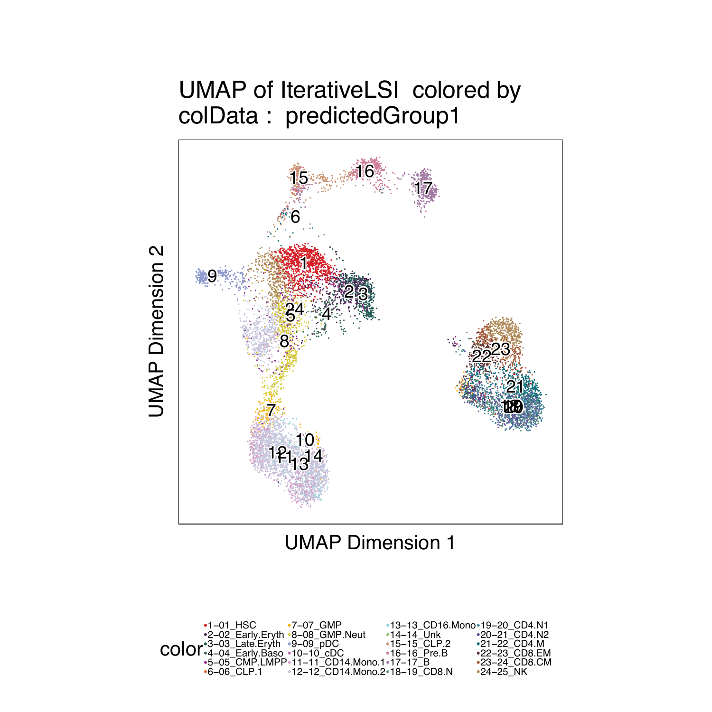

8.1 Labeling scATAC cells with scRNA clusters
First we need to download scRNA data for hematopoiesis from Granja* et al (2019).
#111 MB Download
if(!file.exists("scRNA-Hematopoiesis-Granja-2019.rds")){
download.file(
url = "https://jeffgranja.s3.amazonaws.com/ArchR/TestData/scRNA-Hematopoiesis-Granja-2019.rds",
destfile = "scRNA-Hematopoiesis-Granja-2019.rds"
)
}
seRNA <- readRDS("scRNA-Hematopoiesis-Granja-2019.rds")
seRNA## class: RangedSummarizedExperiment
## dim: 20287 35582
## metadata(0):
## assays(1): counts
## rownames(20287): FAM138A OR4F5 … S100B PRMT2
## rowData names(3): gene_name gene_id exonLength
## colnames(35582): CD34_32_R5:AAACCTGAGTATCGAA-1
## CD34_32_R5:AAACCTGAGTCGTTTG-1 …
## BMMC_10x_GREENLEAF_REP2:TTTGTTGCATGTGTCA-1
## BMMC_10x_GREENLEAF_REP2:TTTGTTGCATTGAAAG-1
## colData names(10): Group nUMI_pre … BioClassification Barcode
## [1] “Group” “nUMI_pre” “nUMI”
## [4] “nGene” “initialClusters” “UMAP1”
## [7] “UMAP2” “Clusters” “BioClassification”
## [10] “Barcode”
## 01_HSC 02_Early.Eryth 03_Late.Eryth 04_Early.Baso 05_CMP.LMPP
## 1425 1653 446 111 2260
## 06_CLP.1 07_GMP 08_GMP.Neut 09_pDC 10_cDC
## 903 2097 1050 544 325
## 11_CD14.Mono.1 12_CD14.Mono.2 13_CD16.Mono 14_Unk 15_CLP.2
## 1800 4222 292 520 377
## 16_Pre.B 17_B 18_Plasma 19_CD8.N 20_CD4.N1
## 710 1711 62 1521 2470
## 21_CD4.N2 22_CD4.M 23_CD8.EM 24_CD8.CM 25_NK
## 2364 3539 796 2080 2143
## 26_Unk
## 161
Unconstrained Integration (not-recommended)
#~5 minutes
projHeme2 <- addGeneIntegrationMatrix(
ArchRProj = projHeme2,
useMatrix = "GeneScoreMatrix",
matrixName = "GeneIntegrationMatrix",
reducedDims = "IterativeLSI",
seRNA = seRNA,
addToArrow = FALSE,
groupRNA = "BioClassification",
nameCell = "predictedCell_Un", #Name of column where cell from scRNA is matched to each cell
nameGroup = "predictedGroup_Un", #Name of column where group from scRNA is matched to each cell
nameScore = "predictedScore_Un" #Name of column where prediction score from scRNA
)## ArchR logging to : ArchRLogs/ArchR-addGeneIntegrationMatrix-f6635e453cfd-Date-2020-04-15_Time-10-08-55.log
## If there is an issue, please report to github with logFile!
## 2020-04-15 10:08:56 : Running Seurat’s Integration Stuart* et al 2019, 0.005 mins elapsed.
## 2020-04-15 10:09:06 : Checking ATAC Input, 0.172 mins elapsed.
## 2020-04-15 10:09:06 : Checking RNA Input, 0.173 mins elapsed.
## 2020-04-15 10:09:17 : Creating Integration Blocks, 0.367 mins elapsed.
## 2020-04-15 10:09:18 : Prepping Interation Data, 0.372 mins elapsed.
## 2020-04-15 10:09:19 : Computing Integration in 1 Integration Blocks!, 0 mins elapsed.
## 2020-04-15 10:09:19 : Block (1 of 1) : Computing Integration, 0 mins elapsed.
## 2020-04-15 10:09:23 : Block (1 of 1) : Identifying Variable Genes, 0.071 mins elapsed.
## 2020-04-15 10:09:28 : Block (1 of 1) : Getting GeneScoreMatrix, 0.146 mins elapsed.
## 2020-04-15 10:09:37 : Block (1 of 1) : Imputing GeneScoreMatrix, 0.298 mins elapsed.
## 2020-04-15 10:09:37 : Computing Impute Weights Using Magic (Cell 2018), 0 mins elapsed.
## 2020-04-15 10:09:37 : Computing Partial Diffusion Matrix with Magic (1 of 2), 0 mins elapsed.
## 2020-04-15 10:09:44 : Computing Partial Diffusion Matrix with Magic (2 of 2), 0.122 mins elapsed.
## 2020-04-15 10:09:51 : Completed Getting Magic Weights!, 0.242 mins elapsed.
## Getting ImputeWeights
## Using weights on disk
## Using weights on disk
## Getting ImputeWeights
## 2020-04-15 10:10:17 : Block (1 of 1) : Seurat FindTransferAnchors, 0.968 mins elapsed.
## 2020-04-15 10:12:00 : Block (1 of 1) : Seurat TransferData Cell Labels, 2.681 mins elapsed.
## 2020-04-15 10:12:34 : Block (1 of 1) : Completed Integration, 3.243 mins elapsed.
## 2020-04-15 10:12:34 : Completed Integration with RNA Matrix, 3.256 mins elapsed.
## ArchR logging successful to : ArchRLogs/ArchR-addGeneIntegrationMatrix-f6635e453cfd-Date-2020-04-15_Time-10-08-55.log
Constrained Integration (recommended)
#We can use the unconstrained fits to help identify which are T/NK Cells
cM <- as.matrix(confusionMatrix(projHeme2$Clusters, projHeme2$predictedGroup_Un))
preClust <- colnames(cM)[apply(cM, 1 , which.max)]
cbind(preClust, rownames(cM)) #Assignments## preClust
## [1,] “17_B” “C3”
## [2,] “20_CD4.N1” “C8”
## [3,] “16_Pre.B” “C4”
## [4,] “08_GMP.Neut” “C11”
## [5,] “11_CD14.Mono.1” “C1”
## [6,] “01_HSC” “C12”
## [7,] “03_Late.Eryth” “C10”
## [8,] “22_CD4.M” “C9”
## [9,] “25_NK” “C7”
## [10,] “09_pDC” “C5”
## [11,] “12_CD14.Mono.2” “C2”
## [12,] “15_CLP.2” “C6”
## [1] “19|20|21|22|23|24|25”
## [1] “01|02|03|04|05|06|07|08|09|10|11|12|13|15|16|17|18”
## [1] “C8” “C9” “C7”
## [1] “C3” “C4” “C11” “C1” “C12” “C10” “C5” “C2” “C6”
#RNA get cells in these categories
rnaTNK <- colnames(seRNA)[grep(cTNK, colData(seRNA)$BioClassification)]
head(rnaTNK)## [1] “PBMC_10x_GREENLEAF_REP1:AAACCCAGTCGTCATA-1”
## [2] “PBMC_10x_GREENLEAF_REP1:AAACCCATCCGATGTA-1”
## [3] “PBMC_10x_GREENLEAF_REP1:AAACCCATCTCAACGA-1”
## [4] “PBMC_10x_GREENLEAF_REP1:AAACCCATCTCTCGAC-1”
## [5] “PBMC_10x_GREENLEAF_REP1:AAACGAACAATCGTCA-1”
## [6] “PBMC_10x_GREENLEAF_REP1:AAACGAACACGATTCA-1”
## [1] “CD34_32_R5:AAACCTGAGTATCGAA-1” “CD34_32_R5:AAACCTGAGTCGTTTG-1”
## [3] “CD34_32_R5:AAACCTGGTTCCACAA-1” “CD34_32_R5:AAACGGGAGCTTCGCG-1”
## [5] “CD34_32_R5:AAACGGGAGGGAGTAA-1” “CD34_32_R5:AAACGGGAGTTACGGG-1”
groupList <- SimpleList(
TNK = SimpleList(
ATAC = projHeme2$cellNames[projHeme2$Clusters %in% clustTNK],
RNA = rnaTNK
),
NonTNK = SimpleList(
ATAC = projHeme2$cellNames[projHeme2$Clusters %in% clustNonTNK],
RNA = rnaNonTNK
)
)
#~5 minutes
projHeme2 <- addGeneIntegrationMatrix(
ArchRProj = projHeme2,
useMatrix = "GeneScoreMatrix",
matrixName = "GeneIntegrationMatrix",
reducedDims = "IterativeLSI",
seRNA = seRNA,
addToArrow = FALSE,
groupList = groupList, #Constrain List
groupRNA = "BioClassification",
nameCell = "predictedCell_Co", #Name of column where cell from scRNA is matched to each cell
nameGroup = "predictedGroup_Co", #Name of column where group from scRNA is matched to each cell
nameScore = "predictedScore_Co" #Name of column where prediction score from scRNA
)## ArchR logging to : ArchRLogs/ArchR-addGeneIntegrationMatrix-f663618b2629-Date-2020-04-15_Time-10-12-35.log
## If there is an issue, please report to github with logFile!
## 2020-04-15 10:12:36 : Running Seurat’s Integration Stuart* et al 2019, 0.014 mins elapsed.
## 2020-04-15 10:12:36 : Checking ATAC Input, 0.027 mins elapsed.
## 2020-04-15 10:12:36 : Checking RNA Input, 0.027 mins elapsed.
## 2020-04-15 10:12:48 : Creating Integration Blocks, 0.218 mins elapsed.
## 2020-04-15 10:12:48 : Prepping Interation Data, 0.222 mins elapsed.
## 2020-04-15 10:12:49 : Computing Integration in 2 Integration Blocks!, 0 mins elapsed.
## 2020-04-15 10:15:24 : Completed Integration with RNA Matrix, 2.574 mins elapsed.
## ArchR logging successful to : ArchRLogs/ArchR-addGeneIntegrationMatrix-f663618b2629-Date-2020-04-15_Time-10-12-35.log
Compare results
## Length of unique values greater than palette, interpolating..
## 01_HSC 02_Early.Eryth 03_Late.Eryth 04_Early.Baso 05_CMP.LMPP
## “#D51F26” “#502A59” “#235D55” “#3D6E57” “#8D2B8B”
## 06_CLP.1 07_GMP 08_GMP.Neut 09_pDC 10_cDC
## “#DE6C3E” “#F9B712” “#D8CE42” “#8E9ACD” “#B774B1”
## 11_CD14.Mono.1 12_CD14.Mono.2 13_CD16.Mono 14_Unk 15_CLP.2
## “#D69FC8” “#C7C8DE” “#8FD3D4” “#89C86E” “#CC9672”
## 16_Pre.B 17_B 18_Plasma 19_CD8.N 20_CD4.N1
## “#CF7E96” “#A27AA4” “#CD4F32” “#6B977E” “#518AA3”
## 21_CD4.N2 22_CD4.M 23_CD8.EM 24_CD8.CM 25_NK
## “#5A5297” “#0F707D” “#5E2E32” “#A95A3C” “#B28D5C”
## 26_Unk
## “#3D3D3D”
## ArchR logging to : ArchRLogs/ArchR-plotEmbedding-f66351b51d5d-Date-2020-04-15_Time-10-15-31.log
## If there is an issue, please report to github with logFile!
## Getting UMAP Embedding
## ColorBy = cellColData
## Plotting Embedding
## 1
## ArchR logging successful to : ArchRLogs/ArchR-plotEmbedding-f66351b51d5d-Date-2020-04-15_Time-10-15-31.log

## ArchR logging to : ArchRLogs/ArchR-plotEmbedding-f6632ef266a4-Date-2020-04-15_Time-10-15-49.log
## If there is an issue, please report to github with logFile!
## Getting UMAP Embedding
## ColorBy = cellColData
## Plotting Embedding
## 1
## ArchR logging successful to : ArchRLogs/ArchR-plotEmbedding-f6632ef266a4-Date-2020-04-15_Time-10-15-49.log

To save a nice looking pdf we use plotPDF which removes white pages and tries to make the plots nice looking.
plotPDF(p1,p2, name = "Plot-UMAP-RNA-Integration.pdf", ArchRProj = projHeme2, addDOC = FALSE, width = 5, height = 5)## [1] “plotting ggplot!”
## [1] “plotting ggplot!”
## [1] 0